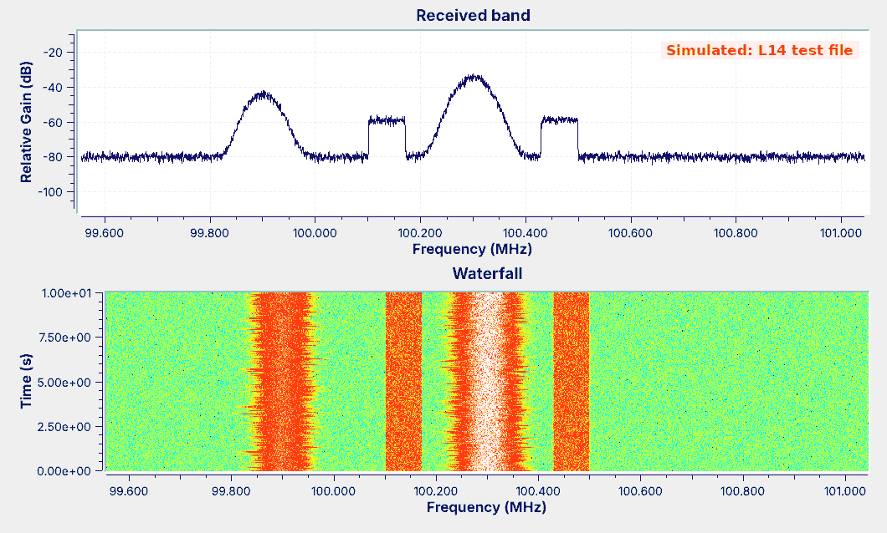
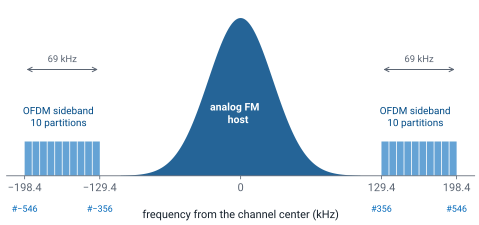
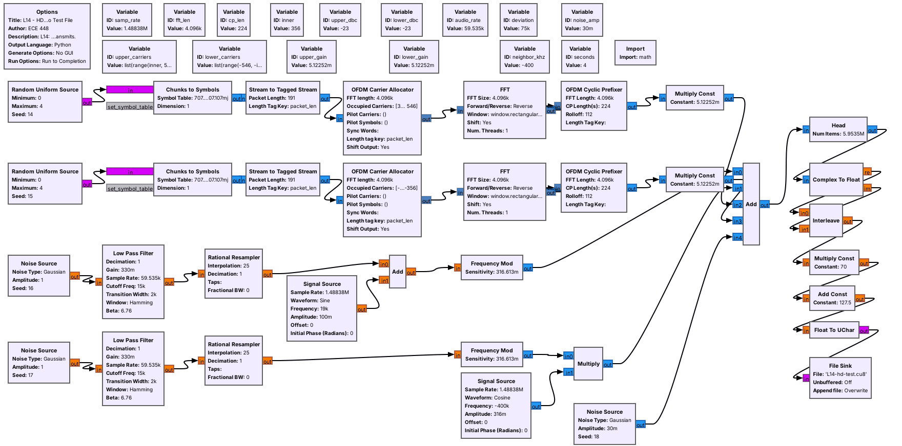
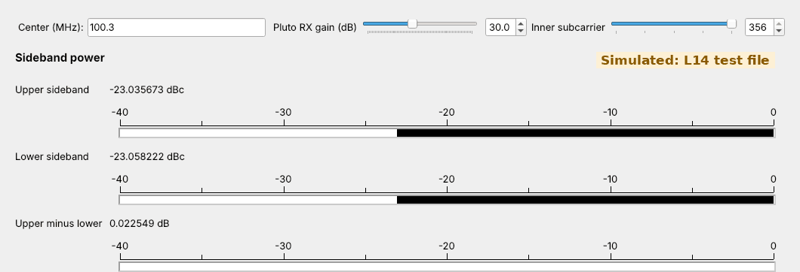
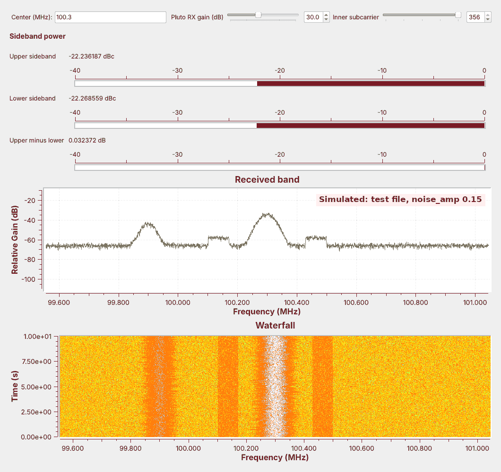

L14 - HD Radio#
HD Radio
We find the digital sidebands beside an FM station on the PlutoSDR, measure them, and decode them with nrsc5.
Lesson 14 · Module 6: Waveform Applications & RF Reverse Engineering · Dr. Neil Rogers
Slides
Learning Objectives
- I can describe how HD Radio works and demodulate an HD Radio signal.
Find the Shelves on the Air

Run
L14-hd-find.grcon the PlutoSDR, centered on a strong FM station.Look for flat bands on either side, and zoom in on one.
We start on the air, with the PlutoSDR and the lesson’s finder flowgraph:
Open
L14-hd-find.grc. Select the File Source and the six blocks after it, through Float To Complex, and press D; then select the PlutoSDR Source and press E.Run it and type a strong local station’s frequency into Center; the station list at hdradio.com shows which local stations carry HD Radio.
Watch the waterfall. The station is a rounded band whose width changes with the audio, and a station with HD Radio also shows two flat bands of constant width on either side of it, which an ordinary FM radio ignores.
Drag a box across one of those bands on the spectrum to zoom in on it, and right-click to zoom back out.
Those bands are HD Radio, a digital broadcast that carries the station’s program, and often extra programs, on the same channel. The course Plutos run in extended-frequency mode, 70 MHz to 6 GHz, so the FM band is in range.
The figure is the finder playing the lesson’s test file rather than an antenna, so it carries a “Simulated” label: the station at 100.3 MHz has the two bands, and the one at 99.9 MHz has none. The rest of the lesson builds that test signal in GNU Radio, explains the finder, and measures the bands, and nrsc5 decodes a recording of a real station.
HD Radio Modes

Hybrid: the analog FM host plus a digital sideband on each side.
Extended hybrid narrows the analog room and widens the sidebands inward.
All digital drops the analog host.
HD Radio carries a station’s program digitally alongside, or in place of, the analog signal. A hybrid station, the layout in the figure, keeps the analog FM signal Lesson 7 received in the center, about 130 kHz wide on each side, where every FM radio still plays it, and puts the digital signal in two sidebands, one on each side, from 129.4 to 198.4 kHz from the channel center. An extended hybrid station limits its analog signal to about 100 kHz each side and adds digital carriers on the inside edge of each sideband, and an all-digital station drops the analog signal entirely. The standard that defines all three is NRSC-5.
The digital signal carries the main program, called HD1, and a station can add HD2, HD3, and more programs that have no analog version.
What Is in the Spectrum
Part |
Where |
Modulation |
|---|---|---|
Analog host |
within about ±130 kHz |
FM |
Inside the host |
0 to 57 kHz after demodulation |
audio, pilot, stereo DSB-SC, RBDS BPSK |
Digital sidebands |
±129.4 to ±198.4 kHz |
OFDM, QPSK on each subcarrier |
Each part of an HD Radio station’s spectrum uses a different modulation. The host is analog FM, and Lesson 7’s demodulator turned it into the multiplex: mono audio up to 15 kHz, the 19 kHz stereo pilot, the stereo difference signal as DSB-SC around 38 kHz, and RBDS, the US name for RDS, as differentially encoded BPSK at 1187.5 bits per second on 57 kHz, carrying the station name, the time, and text. To see it on the same station, open Lesson 7’s L07-rds-rx.grc, run it on its recording, and the panel fills with the station’s name; Lesson 7 shows how to switch it to the radio for a live station. PySDR’s RDS chapter, which the slides list as an activity, decodes the same signal step by step in Python.

The multiplex from Lesson 7, which the analog host carries. The HD Radio sidebands are not in it: they sit outside the host on the radio-frequency spectrum, and an FM demodulator never sees them.
The digital sidebands sit outside the host, and each one is OFDM, a block of many narrow carriers, each carrying QPSK. The next frames describe that block, and the rest of the lesson finds it, measures it, and decodes it.
The Digital Sidebands
Each sideband is many narrow subcarriers, 363.4 Hz apart: one FFT bin at
fft_len4096.They come in partitions of 18 data subcarriers and 1 reference.
The sidebands are much weaker than the host.
Each sideband is not one carrier but 191 narrow ones, called subcarriers, spaced 363.4 Hz apart. NRSC-5 numbers them from the channel center, so subcarrier \(k\) sits at \(k \times 363.4\) Hz; the upper sideband runs from subcarrier 356, at 129.4 kHz, to 546, at 198.4 kHz, and the lower sideband is its mirror image. We use those numbers as block settings: the sideband meter later in the lesson takes its band from Variables named inner and outer.
The subcarriers come in frequency partitions of 19: 18 carry data, and one reference subcarrier, at 356, 375, 394, and every 19th after that up to 546, carries known symbols that the receiver uses to find the timing, frequency, and phase. An extended hybrid station adds partitions inside subcarrier 356. The sidebands are much weaker than the host, so that they do not disturb analog radios or the neighboring stations; the meters in this lesson read each sideband’s power relative to the host, in dBc.
The OFDM Concept
OFDM sends data on many closely spaced subcarriers at once.
Their spectra overlap, but each one is zero at its neighbors’ centers.
An FFT separates them again at the receiver.
Orthogonal frequency-division multiplexing (OFDM) divides a wide channel among many slow subcarriers instead of one fast carrier. The subcarriers are spaced so closely that their spectra overlap, but each one passes through zero at the center of every other one. That property is orthogonality, the O in OFDM, and it lets the receiver separate them with an FFT. The explorer two frames ahead shows it.
OFDM in GNU Radio
Each subcarrier carries one I/Q point per symbol: BPSK, QPSK, or QAM.
An inverse FFT of
fft_lenpoints builds a whole symbol at once.A guard interval of
cp_lensamples goes in front of each symbol.
Each subcarrier carries one constellation point per OFDM symbol, so a symbol is a list of I/Q points, one per subcarrier: QPSK points on HD Radio’s data subcarriers. GNU Radio’s OFDM Carrier Allocator places the points on the subcarriers we list, a reverse FFT turns the whole list into one symbol of time samples, and the OFDM Cyclic Prefixer copies the end of each symbol in front of it as a guard interval, which separates each symbol from the one before it. These are the blocks of the GNU Radio wiki’s Basic OFDM Tutorial, which the slides point to.
For HD Radio at 1,488,375 samples per second, fft_len = 4096 makes each FFT bin exactly one 363.4 Hz subcarrier, and cp_len = 224 samples is NRSC-5’s guard. Symbols follow one another over time, each 4096 + 224 samples long. The receiver runs the same steps backward: drop the guard, take a forward FFT, and read each subcarrier’s point.
OFDM Explorer
Each OFDM symbol is a set of tones that last one FFT length, and the spectrum of a tone that lasts that long is a sinc shape whose nulls fall exactly one subcarrier spacing apart. With the subcarriers at that spacing, every subcarrier’s spectrum crosses zero at the center of every other one, which is the orthogonality of the previous frames.
The left panel shows the spectra of five neighboring subcarriers with the HD Radio spacing; the red dots on the dashed line are what the four neighbors add at the center subcarrier’s frequency. At spacing 1.00 every red dot sits on zero. Move the spacing away from 1.00 and the dots leave zero, and the readout shows the neighbors leaking in. The right panel shows two symbols with their guards, an echo of them, and the receiver’s FFT window. Drag the echo delay past the guard and the end of symbol 1’s echo enters symbol 2’s window, shown in red.
The Test Signal

Each sideband is random QPSK on 191 subcarriers, built with an inverse FFT.
It writes 4 s as unsigned bytes, nrsc5’s default format: 11.9 MB.
L14-hd-test-tx.grc recreates a hybrid station with the OFDM blocks of the previous frames. For each sideband, random QPSK points fill subcarriers 356 to 546 in the OFDM Carrier Allocator, a reverse FFT of 4096 points turns them into one symbol, and the OFDM Cyclic Prefixer adds the 224-sample guard. A Multiply Const sets each sideband’s level, here \(-23\) dBc. The FM host is filtered noise and a 19 kHz pilot, frequency modulated with the broadcast 75 kHz deviation setting, and an analog-only station sits 400 kHz below.
The sidebands carry random symbols, not NRSC-5 data, so nrsc5 cannot decode this file; it is a test signal for finding and measuring the sidebands. It writes L14-hd-test.cu8, unsigned 8-bit I and Q at 1,488,375 samples per second, nrsc5’s default input format. Nothing in it transmits: its last block is a File Sink.
The Sideband Finder
![GNU Radio Companion with L14-hd-find.grc open: a File Source of bytes, a Throttle, UChar To Float, Add Const minus 127.5, Multiply Const 1/128, Deinterleave, and Float To Complex, and a disabled PlutoSDR Source, both feeding a frequency sink, a waterfall sink, and three Frequency Xlating FFT Filters for the host and the two sidebands, each followed by Complex to Mag squared, a Moving Average, Keep 1 in N, and Log10, with three Subtract blocks feeding a number sink; a disabled Rational Resampler and SigMF Sink hang off the PlutoSDR Source](../../viz/img/L14-grc-find.png)
Five blocks turn unsigned bytes into complex samples.
A spectrum, a waterfall, and three band-power meters show the sidebands.
L14-hd-find.grc plays the test file, any unsigned 8-bit recording made at 1,488,375 samples per second, or the PlutoSDR live. Such a file stores each sample as two unsigned bytes from 0 to 255, so the first five blocks subtract 127.5, scale by 1/128, and pair the bytes into complex samples. The PlutoSDR Source delivers complex samples directly, so it skips those blocks. To switch to the radio, select the File Source and the six blocks after it, through Float To Complex, press D to disable all seven, and enable the PlutoSDR Source; GRC will not run with both paths enabled.
The QT GUI Frequency Sink and Waterfall Sink use an FFT of 4096 points, so each bin is one subcarrier wide. The three meters measure the power in a band, which the next frames use.
Finding the Sidebands
![The L14 sideband finder window labeled Simulated: L14 test file: controls for Center, Pluto RX gain, and Inner subcarrier at 356; the number sink reads minus 23.04 dBc for the upper sideband, minus 23.06 dBc for the lower, and 0.02 dB for upper minus lower; the frequency sink shows the host at 100.3 MHz peaking near minus 33 dB, flat shelves near minus 58 dB on both sides, a floor near minus 80 dB, and the analog neighbor at 99.9 MHz; the waterfall shows the shelves as two straight bands of constant width beside the host](../../viz/img/L14-hd-find.png)
The shelves have flat tops and sharp edges, unlike FM.
On the waterfall they are straight bands that never change width.
On the frequency sink, the shelves begin 129.4 kHz from the station, at 100.1706 and 100.4294 MHz, and end at 100.1016 and 100.4984 MHz. Their tops are flat because every subcarrier carries the same power, and their edges are sharp because the subcarriers stop at 356 and 546. The FM host is rounded, and on the waterfall its width changes with the audio, while the shelves stay the same width all the time. That difference is how we recognize HD Radio on a live band: look for two straight, flat bands about 130 to 200 kHz either side of a station.
The shelves sit about 25 dB under the top of the host on the display, but the meters, not the display heights, give the power ratio between the bands.
Measuring Sideband Power

Each meter shifts a band to 0 Hz, filters it, and averages \(\vert x\vert^2\) for 0.2 s.
A sideband meter minus the host meter is dBc; a third reading compares the sides.
A band-power meter is four blocks we have used before. A Frequency Xlating FFT Filter moves the band’s center to 0 Hz and keeps only the band, \(\pm 100\) kHz for the host and \(\pm 34.7\) kHz around \(\pm 163.9\) kHz for each sideband, and decimates by 6. Complex to Mag^2 gives each sample’s power, a Moving Average over 0.2 s averages it, Keep 1 in N slows the result to 50 readings a second, and Log10 with a factor of 10 converts each reading to dB. Subtracting the host’s meter from a sideband’s meter gives that sideband in dBc, and a third Subtract shows the upper sideband minus the lower.
On the test file the meters read \(-23.04\) and \(-23.06\) dBc, the level the test transmitter sets, and the sides differ by 0.02 dB. The same flowgraph on the real station recorded in the nrsc5 project’s sample file reads about \(-24.3\) and \(-23.8\) dBc, close to the test file. On a live station the two meters need not agree, and the lab compares them. The Inner subcarrier slider steps the meters’ inner edge down one partition at a time, from 356 to 280, so the same meters work on an extended hybrid station: slide it down until the readings stop rising.
What Noise Does

Raise
noise_ampin the test transmitter and run the finder again.The floor rises, the shelves sink toward it, and the meters read high.
To watch noise at work, open L14-hd-test-tx.grc, change the Variable noise_amp from 0.03 to 0.15, run it to write a new test file, and run the finder on it. The figure is that run. The floor rises by about 14 dB, the host still stands far above it, and the shelves, which are much weaker, now stand only a few dB above the floor. The meters read about 0.8 dB higher than before, because each one measures all the power in its band and the noise in the band adds to the sideband’s. On a live station the same thing happens as the signal weakens, so a meter reading is trustworthy only while the shelves stand well above the floor.
Decoding with nrsc5
nrsc5 --iq-input-format cf32 -r hd.sigmf-data 0 # play HD1
nrsc5 --iq-input-format cf32 -r hd.sigmf-data 1 # play HD2
Optional: nrsc5 decodes a PlutoSDR recording of the station.
The finder records it as SigMF at half rate, the rate nrsc5 reads.
Program 0 is HD1; 1 to 3 are HD2 to HD4.
Finding and measuring the sidebands needs only the spectrum. Decoding them needs the rest of NRSC-5: the receiver locks onto the reference subcarriers, reads each subcarrier’s QPSK point, corrects errors, and decompresses the audio. GNU Radio has no HD Radio receiver module, so the open-source nrsc5 project is the decoder, and this step is optional. It plays the chosen program and prints the station’s name, the song title and artist, and measures of signal quality as they arrive.
nrsc5 has no PlutoSDR driver, but it reads recordings, and its README lists complex float at 744,188 samples per second, half our rate, as one input format. The finder writes exactly that: enable its Rational Resampler, which halves the rate, and its SigMF Sink along with the PlutoSDR Source, run about 10 s on the station, and stop. GRC draws the SigMF Sink with an orange border, its mark for a block it lists as deprecated; it still runs in GNU Radio 3.10. It writes hd.sigmf-data, about 60 MB, and hd.sigmf-meta, which records the rate and the center frequency at the start. Then run the commands above.
nrsc5 is a C program, not part of radioconda: build it from source on Linux, install it with the project’s Homebrew formula on macOS, or use the project’s MSYS2 build on Windows, and use a recent version, because --iq-input-format is newer than some packages. We have not run it in this course yet. With an optional RTL-SDR, nrsc5 100.3 0 tunes a station live. The related project gr-nrsc5 is an HD Radio transmitter for GNU Radio, not a receiver, and this course does not transmit on the FM band; gr-rds, from Lesson 7, still decodes the RBDS inside the host.
Key Point
HD Radio adds two OFDM sidebands, 129.4 to 198.4 kHz from the station’s center and much weaker than the analog host. They appear as flat shelves on a spectrum, band-power meters measure them, and nrsc5 decodes them.
On the SDR
Run the PlutoSDR at 1,488,375 samples per second, centered on the station.
Look for flat shelves 129 to 198 kHz either side of each station.
Receiving is unrestricted, and the finder has no transmit block.
To look for HD Radio live, disable the File Source and the six blocks after it in L14-hd-find.grc, enable the PlutoSDR Source, and type the station’s frequency into Center. About 1.5 MS/s streams continuously over the Pluto’s USB 2.0 link. Centering on the station puts the Pluto’s DC correction on the host, where it does not touch the sidebands or the meters.
The finder sets the Pluto’s gain by hand, from the Pluto RX gain slider, rather than with its automatic gain, so a reading at a given gain means the same thing every time. Start near 30 dB, and lower it if the floor rises or copies of strong stations appear, because the sidebands are far weaker than the host and an overloaded receiver buries them. Not every station carries HD Radio, so check the station list at hdradio.com, and then type its frequency into the finder.
A weak station reads high, as the noise frame showed. As in Lesson 7, receiving is unrestricted and transmitting is not; nothing in this lesson transmits.
Downloads
L14-hd-test-tx.grc: writes
L14-hd-test.cu8, 4 s (11.9 MB) of a simulated hybrid station at 100.3 MHz, with an analog-only neighbor 400 kHz below. Run it once; it stops on its own.L14-hd-find.grc: the spectrum, waterfall, and sideband power meters, playing the test file, an unsigned 8-bit recording at 1,488,375 samples per second, or the PlutoSDR live, and recording the Pluto as SigMF for nrsc5.
Put both flowgraphs in one folder and run the test transmitter first; GRC runs a flowgraph from its own folder, so the finder finds the test file there.
What this lesson follows. The topics and their order come from the slides. The hands-on steps follow the pages those slides link and the documentation of the tools:
GNU Radio wiki, Basic OFDM Tutorial: the OFDM Carrier Allocator, FFT, and OFDM Cyclic Prefixer of the test transmitter. The other blocks are in the GNU Radio tutorials, and each block’s wiki page has the same name as the block.
nrsc5 and its README, the optional decoder, with build instructions for Linux, macOS, and Windows and its input formats, and NRSC5-DUI, the graphical front end the slides list.
PySDR, RDS, the slides’ activity for decoding RBDS in Python, and gr-rds, the RDS blocks of Lesson 7.
hdradio.com station list, to find local HD Radio stations.
NRSC-5 Layer 1 FM specification, SY_IDD_1011s (PDF): Section 3.5 and Table 5-1 give the spacing and subcarriers.
For more practice, the slides point to the GRCon 2023 CTF challenge “Not Really Superior Clatter-V”, built on an HD Radio signal.
Summary
Part |
What to know |
In GNU Radio |
|---|---|---|
Modes |
hybrid, extended hybrid, all digital |
the shelves on the finder’s waterfall |
Host |
analog FM, about ±130 kHz, with mono, pilot, stereo, RBDS |
Lesson 7’s receiver and gr-rds |
Sidebands |
±129.4 to ±198.4 kHz, subcarriers 356 to 546 |
the meter’s |
Subcarriers |
363.4 Hz apart, partitions of 18 data and 1 reference |
|
Guard |
a copy of each symbol’s end |
|
Decoder |
nrsc5 (optional), on a Pluto SigMF recording at 744,188 S/s |
program 0 is HD1 |
Practice
Looking Ahead
The L14 Lab builds a sideband meter, identifies a station’s mode, and measures a live station.
Lesson 15 recovers the carrier and timing of an mPSK signal.
Today we found the HD Radio sidebands beside an FM station, measured their power with meters built from familiar blocks, and built an OFDM signal from GNU Radio’s own blocks. The L14 Lab is the bench version: build the sideband meter yourself, use it on a capture whose configuration you do not know, and measure a live station on the PlutoSDR, with an optional nrsc5 decode.
Lesson 15 turns to receiver work that nrsc5 performed for us today. Every QPSK subcarrier here needed its phase and timing recovered before the receiver could read its symbols, and Lesson 15 builds that recovery for a single mPSK carrier in GNU Radio.